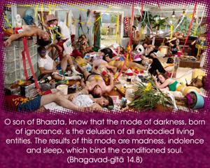
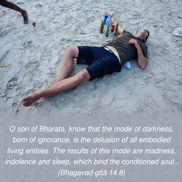
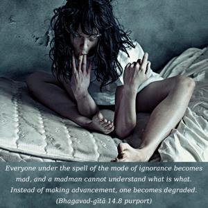
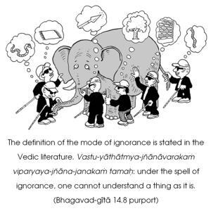
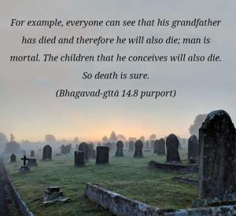

O son of Bharata, know that the mode of darkness, born of ignorance, is the delusion of all embodied living entities. The results of this mode are madness, indolence and sleep, which bind the conditioned soul.





In this verse the specific application of the word tu is very significant. This means that the mode of ignorance is a very peculiar qualification of the embodied soul. The mode of ignorance is just the opposite of the mode of goodness. In the mode of goodness, by development of knowledge, one can understand what is what, but the mode of ignorance is just the opposite. Everyone under the spell of the mode of ignorance becomes mad, and a madman cannot understand what is what. Instead of making advancement, one becomes degraded. The definition of the mode of ignorance is stated in the Vedic literature. Vastu-yāthātmya-jñānāvarakaṁ viparyaya-jñāna-janakaṁ tamaḥ: under the spell of ignorance, one cannot understand a thing as it is. For example, everyone can see that his grandfather has died and therefore he will also die; man is mortal. The children that he conceives will also die. So death is sure. Still, people are madly accumulating money and working very hard all day and night, not caring for the eternal spirit. This is madness. In their madness, they are very reluctant to make advancement in spiritual understanding. Such people are very lazy. When they are invited to associate for spiritual understanding, they are not much interested. They are not even active like the man who is controlled by the mode of passion. Thus another symptom of one embedded in the mode of ignorance is that he sleeps more than is required. Six hours of sleep is sufficient, but a man in the mode of ignorance sleeps at least ten or twelve hours a day. Such a man appears to be always dejected and is addicted to intoxicants and sleeping. These are the symptoms of a person conditioned by the mode of ignorance.